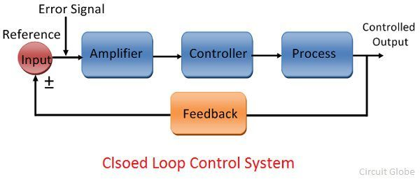

Son convenientes para cumplir tareas por ciclos o tiempos.
Requieren poco mantenimiento.
Lazo abierto
Inconvenientes
El sistema de no tiene retroalimentación por lo que no facilita la automatización del proceso.
Son sistemas inexactos y poco precisos.
Es afectado por las perturbaciones externas del proceso.
No es capaz de corregir las desviaciones de la salida de forma automática.
Lazo cerrado

Lazo cerrado
Ventajas
Tienen una señal de retroalimentación para controlar la salida por lo tanto precisos y menos propensos a errores.
Corrigen errores mediante la señal de realimentación.
Son menos afectados por el ruido del proceso.
Soportan automatización del proceso.
Lazo cerrado
Inconvenientes
Son más complejos para ser diseñados y ajustados.
Son sistemas caros.
Provocan oscilaciones dentro del proceso si no estan bien ajustados.
Requieren alto mantenimiento.
Clever Quotes
These guys come in two forms, inline: The nice thing about standards is that there are so many to choose from and block:
“For years there has been a theory that millions of monkeys typing at random on millions of typewriters would
reproduce the entire works of Shakespeare. The Internet has proven this theory to be untrue.”
Speaker View
There's a speaker view. It includes a timer, preview of the upcoming slide as well as your speaker notes.